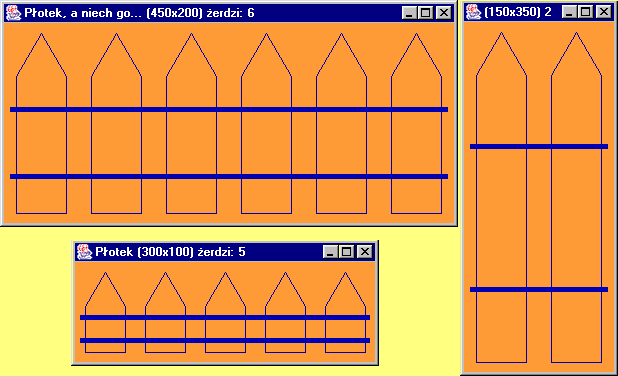
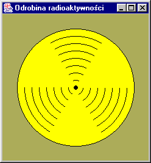
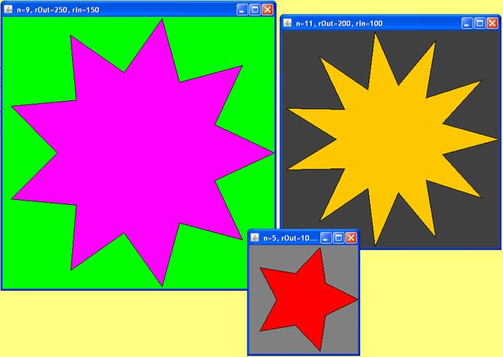
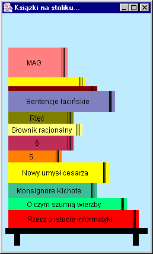

| fragment kodu programu |
class Book{
...
void setPosition(int x,int y){...} //po³o¿enie ksi±¿ki w oknie
int getWidth(){ ... }
Book(int height,int width,String title,int r,int g,int b){
...
}
void drawBook(Graphics g){
...
}
} |
